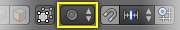

衰减编辑¶
衰减编辑是一种转换选定元素（如顶点）的方法，同时还会影响附近的其他元素。例如，单个顶点的移动导致未选顶点在给定范围内移动。更靠近所选顶点的未选顶点将移动的距离远远多于较远的顶点（即，它们将相对于所选元素的位置成比例地移动）。由于衰减编辑会影响附近的几何图形，因此当你需要使密集网格的表面平滑变形时，它是非常有用的。
物体模式¶
参考
- 模式
物体模式
- 菜单
通过
 图标, 显示在下图标题栏中黄色正方形的图标。
图标, 显示在下图标题栏中黄色正方形的图标。- 快捷键
O
衰减编辑通常用在 编辑模式，但是，也可以在 物体模式。在 物体模式 下，该工具作用于物体整体而非独立的网络元素。
在下图中，沿Z轴缩放右侧的圆柱体。当开启 衰减编辑 时，邻近的圆柱体同样位于工具的影响半径内。

在物体模式的衰减编辑。¶
编辑模式¶
参考
- 模式
编辑模式
- 菜单
并通过  高亮图标
- 快捷键
O, Alt-O, Shift-O
使用密集的几何图形时，可能难以对顶点进行微妙的调整，而不会在模型表面产生可见的块和折痕。当你遇到像这样的情况时，衰减编辑工具可以用来使模型表面平滑地变形。这是通过工具在给定范围内自动修改未选定的顶点来完成的。

在编辑模式的衰减编辑。¶
影响¶
您可以使用鼠标滚轮分别增加或减小衰减编辑影响的半径 WheelUp, WheelDown 或 PageUp, PageDown。当你改变半径时，围绕你选择的点将相应地调整它们的位置。
影响圆环。¶
选项¶

衰减编辑工具。¶ |

衰减菜单。¶ |
衰减编辑 模式菜单在 3D视图 标题栏上。
- 禁用 O, Alt-O
衰减编辑关闭，只有选定的顶点会受到影响。
- 启用 O, Alt-O
所选顶点以外的顶点在定义的半径范围内受到影响。
- 投射式 (2D)
在应用半径时忽略沿视图的深度。

常规和投射式 (2D) 衰减选项 (右) 之间的差异。¶
- 连接 Alt-O
衰减不是仅制可以使用半径，而是通过连接的几何体进行扩展。这意味着你可以按比例（衰减）编辑手指中的顶点而不影响其他手指。当其他顶点在物理上接近（在3D空间中）时，它们随着网格的拓扑连接边远离。 连接 有效时，图标将显示灰色中心。此模式仅适用于 编辑模式 。
- 衰减
编辑时，你可以使用 子菜单，使用标题栏图标 衰减菜单，或按下 Shift-O 来切换不同的选项。

常量，不衰减。¶ |

随机化衰减。¶ |
尖锐衰减。¶ |
|

根部衰减。¶ |
球形化衰减。¶ |

平滑衰减。¶ |
线性衰减。¶ |

{kind=link}
{kind=link}
{kind=link}
{kind=link}